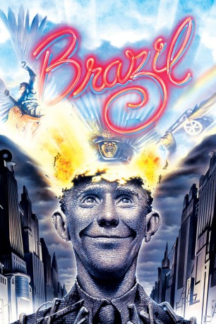
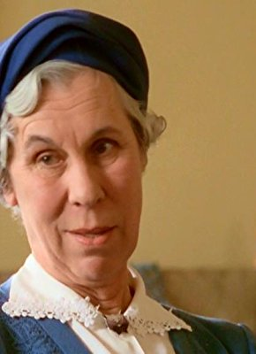

#851 Brazil
Auszeichnungen: für 2 Oscars nominiert 2 BAFTA-Awards gewonnen
 
 IMDB-Wertung: 8.0 / 10
IMDB-Wertung: 8.0 / 10  Metascore: 88
Metascore: 88 
Sam Lowry ist ein kleiner Angestellter im Archiv des allmächtigen „Ministeriums für Information“ (M.O.I.) in einer düsteren, bürokratisierten und technisierten Welt. In seinen Träumen trifft er als geflügelter Held in schimmernder Rüstung eine blonde Schönheit in wallendem Weiß. Im wirklichen Leben möchte er gerne unauffällig leben. Seine einflussreiche Mutter, die mit ihrer Freundin um den besseren Schönheitschirurgen konkurriert, arrangiert eine Beförderung, die Sam aber ablehnt.
Jahr: 1985
Dauer: 132 Minuten
FSK: 12
Land: England Studio: 20th Century Fox of GermanyTonspuren:
Untertitel: Deutsch,
Auflösung: 1080p (1920x1040) Größe: 11161 MB
Genre: Drama, Sci-Fi
Regisseur:  Terry Gilliam
Terry Gilliam
Drehbuch: Terry Gilliam, Tom Stoppard, Charles McKeown
Soundtrack: Michael Kamen
Darsteller:
 Jonathan Pryce als Sam Lowry
Jonathan Pryce als Sam Lowry Robert De Niro als Harry Tuttle
Robert De Niro als Harry Tuttle Katherine Helmond als Mrs. Ida Lowry
Katherine Helmond als Mrs. Ida Lowry Ian Holm als Mr. Kurtzmann
Ian Holm als Mr. Kurtzmann Bob Hoskins als Spoor
Bob Hoskins als Spoor Michael Palin als Jack Lint
Michael Palin als Jack Lint- Ian Richardson als Mr. Warrenn
 Peter Vaughan als Mr. Helpmann
Peter Vaughan als Mr. Helpmann- Kim Greist als Jill Layton
 Jim Broadbent als Dr. Jaffe
Jim Broadbent als Dr. Jaffe Derrick O'Connor als Dowser
Derrick O'Connor als Dowser Simon Jones als Arrest Official
Simon Jones als Arrest Official- Nigel Planer als Charlie--Dept. of Works
 Terence Bayler als T.V Commercial Presente
Terence Bayler als T.V Commercial Presente- Gorden Kaye als M.O.I. Lobby Porter
 Winston Dennis als Samurai Warrior
Winston Dennis als Samurai Warrior Jack Purvis als Dr. Chapman
Jack Purvis als Dr. Chapman David Gant als Interview Official
David Gant als Interview Official Roger Ashton-Griffiths als Priest
Roger Ashton-Griffiths als Priest Terry Gilliam als Smoking Man at Shangri-La Towers , uncredited
Terry Gilliam als Smoking Man at Shangri-La Towers , uncredited Sergio Kato als Interview Official , uncredited
Sergio Kato als Interview Official , uncredited- Peter Sands als Ida's Boyfriend , uncredited
-  Barbara Hicks als Mrs. Alma Terrain
 Charles McKeown als Harvey Lime
Charles McKeown als Harvey Lime- Kathryn Pogson als Shirley
 Bryan Pringle als Spiro
Bryan Pringle als Spiro- Sheila Reid als Mrs. Veronica Buttle
- John Flanagan als T.V. Interviewer / Salesman
- Ray Cooper als Technician
- Brian Miller als Mr. Archibald Buttle
- Simon Nash als Boy Buttle
- Prudence Oliver als Girl Buttle
- Derek Deadman als Bill--Dept. of Works
- Tony Portacio als Neighbour in Clark's Pool
- Bill Wallis als Bespectacled lurker
- Elizabeth Spender als Alison / 'Barbara' Lint
- Antony Brown als Porter - Information Retrieval
- Myrtle Devenish als Typist in Jack's Office
- Holly Gilliam als Holly
- John Pierce Jones als Basement Guard
 Ann Way als Old Lady with Dog
Ann Way als Old Lady with Dog Don Henderson als First Black Maria Guard
Don Henderson als First Black Maria Guard- Howard Lew Lewis als Second Black Maria Guard
- Oscar Quitak als Interview Official
- Harold Innocent als Interview Official
- John Grillo als Interview Official
- Ralph Nossek als Interview Official
- James Coyle als Interview Official
- Patrick Connor als Cell Guard
- Russell Keith Grant als Young Gallant at Funeral
Datei: X:\1985\Brazil (1985, FSK12, 1920x1040).mkv seit 31.03.2015
Festplatte: HD 1980-1986
 Es gibt insgesamt 43 Filme in der Gruppe '1985'
Es gibt insgesamt 43 Filme in der Gruppe '1985'